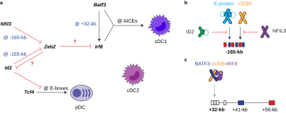

About
I joined the Anders Hansen Lab at MIT in 2026 as a postdoctoral associate, where I am studying the interplay between 3D genome organization and transcription.
I completed my PhD in Biology and Biomedical Science (Immunology) in May 2026 under the mentorship of Kenneth Murphy. During my PhD, I studied transcriptional mechanisms that control cell fates in the immune system, particularly the Irf8 +32-kb enhancer during cDC1 fate commitment and the Zeb2 -165-kb enhancer in multiple lymphoid and myeloid lineages.
Research Interests: molecular and physical mechanisms for enhancer-promoter contact, enhancer-promoter selectivity, enhancer switching, and silencer action.
Research
KITL/FLT3L culture system
I developed a two-step culture protocol that increases cDC1 yield ~10-fold over standard methods. FAQ document
Irf8 +32-kb enhancer
I generated Irf8 +32H/H mice, which carry an “optimized” version of the Irf8 +32-kb enhancer featuring multiple high-affinity AICEs. These mice exhibit erroneous IRF8 autoactivation in cDC2 progenitors, cDC2 lineage redirection, and paradoxically reduced IRF8 expression in cDC1s. These problems compromise both cDC1- and cDC2-dependent arms of immunity.
Zeb2 -165-kb enhancer
I generated ∆E mice lacking three E-boxes in the enhancer. E-boxes activate this enhancer in the lymphoid compartment to enable B cell and pDC development, whereas E-boxes and CEBP sites together activate this same enhancer in the myeloid compartment to support cDC2 and monocyte development. I also demonstrated that ID2 secures the cDC1 fate by antagonizing E protein activity at the Zeb2 enhancer.
PhD Thesis
Molecular Circuits in Dendritic Cell Development. Washington University in St. Louis, 2026. PDF

Selected Publications
- Ou, F., et al. E proteins facilitate Zeb2 expression for balanced lymphoid and myeloid development. Research Square 2025. Accepted in Nature Immunology.
- Ou, F., Murphy, K.M. “What’s in a name?” Clarifying the identity of RORγt+ antigen-presenting cells. Journal of Experimental Medicine 2025. PDF
- Murphy, K.M., Ou, F. Weak enhancer allows autoactivation of Irf8 to control cDC1 versus cDC2 lineage commitment. Nature Immunology 2024. PDF
- Ou, F., et al. Optimization of the Irf8 +32-kb enhancer disrupts dendritic cell lineage segregation. Nature Immunology 2024. Main PDF
- Ou, F., et al. Enhanced in vitro type 1 conventional dendritic cell generation via the recruitment of hematopoietic stem cells and early progenitors by Kit ligand. European Journal of Immunology 2023. Main PDF
Full list on Google Scholar
CV
Check out my CV here.
Beyond the Bench
I grew up in Fuzhou, Fujian, China. I enjoyed playing basketball and bouldering with my fiancée until announcing my retirement from sports in June 2026. I also enjoy exploring the fantasy world of J. R. R. Tolkien. Fun fact: my Hogwarts house is Gryffindor.
Contact
Email · Google Scholar · ORCID · GitHub · Twitter/X · Bluesky · LinkedIn